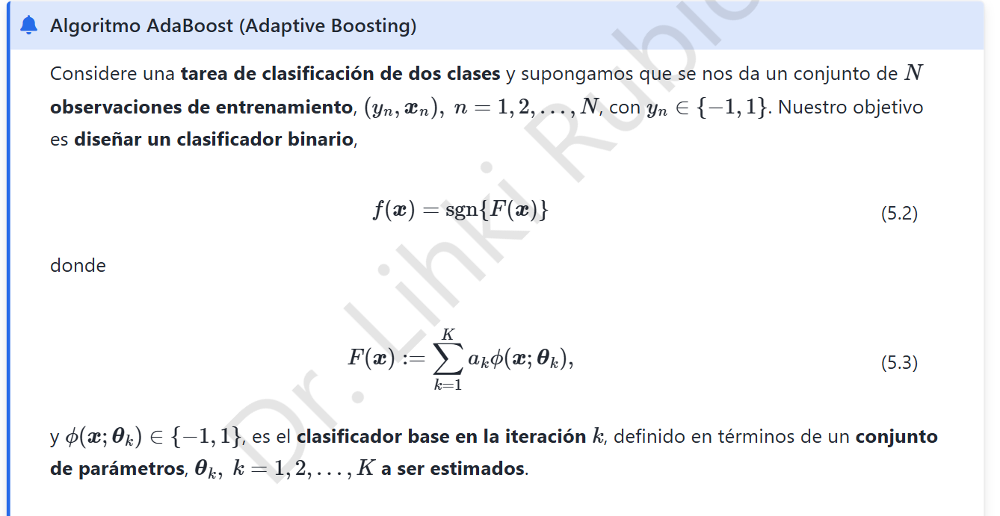
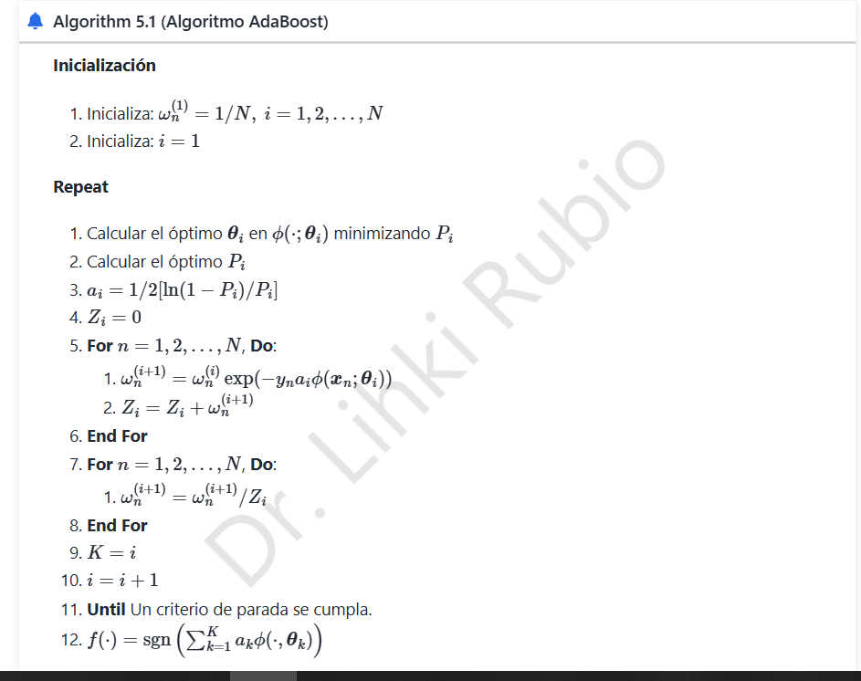

8. AdaBoost · Derivación del algoritmo


8.1 Objetivo y esquema aditivo
En clasificación binaria, \(y_n\in\{-1,1\}\), cada clasificador débil \(\phi(x;\theta_i)\in\{-1,1\}\) y el conjunto produce
AdaBoost selecciona sucesivamente clasificadores para reducir la pérdida exponencial:
En la iteración \(i\) se conserva la combinación anterior \(F_{i-1}\) y se agrega \(\alpha\phi\).
8.2 ¿De dónde salen los pesos de las observaciones?
El criterio del nuevo clasificador se escribe
Definimos pesos normalizados \(w_n^{(i)}=e^{-y_nF_{i-1}(x_n)}/\sum_re^{-y_rF_{i-1}(x_r)}\). Con \(F_0=0\), todos los ejemplos comienzan con el mismo peso: \(w_n^{(1)}=1/N\).
8.3 El clasificador débil minimiza el error ponderado
La cantidad \(y_n\phi(x_n)\) vale \(+1\) si hay acierto y \(-1\) si hay error. Para el error ponderado
la pérdida de la etapa, salvo un factor positivo que no cambia el mínimo, es
Cuando \(\alpha>0\), minimizar respecto a \(\phi_i\) equivale a minimizar \(P_i\). Así se justifica entrenar el clasificador que comete menos errores ponderados, no simplemente menos errores sin pesos.
8.4 Cálculo del peso del clasificador
Derivamos:
Al igualar a cero y despejar,
Por tanto,
La segunda derivada \(J_i''=(1-P_i)e^{-\alpha}+P_ie^{\alpha}>0\) demuestra que es mínimo. Bajo el supuesto habitual \(0<P_i<1/2\), se cumple \(\alpha_i>0\). Si \(P_i=1/2\), el clasificador no aporta poder discriminante; si \(P_i=0\), la fórmula requiere tratamiento como clasificador perfecto (detención o límite).
Corrección: es fundamental que el logaritmo abarque la fracción completa, no solo el numerador.
8.5 Actualización y normalización de pesos
Después de elegir \(\phi_i\) y \(\alpha_i\), el peso de la observación \(n\) es
Como los ejemplos mal clasificados tienen \(y_n\phi_i=-1\), su peso se multiplica por \(e^{\alpha_i}\); los aciertos lo hacen por \(e^{-\alpha_i}\). De ese modo la siguiente etapa presta más atención a los casos difíciles.
El normalizador depende de \(P_i\):
Con los nuevos pesos, el conjunto de ejemplos antes mal clasificados recibe masa total
8.6 Cota de entrenamiento
Si \(y_nF_K(x_n)\le0\), entonces \(\mathbf1\{\operatorname{sign}F_K(x_n)\ne y_n\}\le e^{-y_nF_K(x_n)}\) (la convención en empate debe tratarse de manera coherente). En la pérdida exponencial promedio,
Si cada clasificador mantiene \(P_i\le\tfrac12-\gamma\) con \(\gamma>0\), el producto es a lo sumo \((\sqrt{1-4\gamma^2})^K\), por lo que disminuye exponencialmente con las iteraciones.
Conclusión: AdaBoost transforma clasificadores débiles en una combinación ponderada. Reorienta iterativamente la distribución hacia observaciones con error y produce una regla final basada en el signo de la suma ponderada.